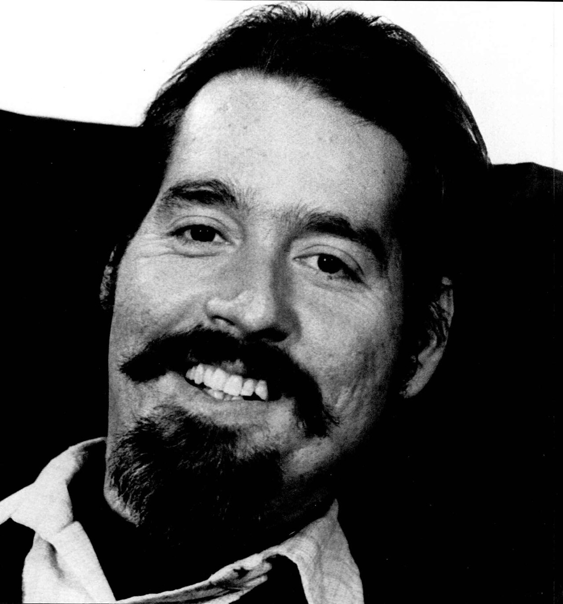

3 障害者の権利と当事者運動
今回は障害者福祉において重要な概念であるノーマライゼーションおよびそれを達成するための当事者たちの運動を見ていきます。
3.1 ノーマライゼーション
障害者福祉においてノーマライゼーション（normalization）という考え方があります。 ノーマライゼーションは，普通を表す「ノーマル」と「〜にすること(-ization)」を組み合わせた造語で，障害者福祉において重要な概念として扱われてきました。 もともとは北欧の障害者施策から出てきた概念ですが今では広く世界で使われています。 ここではノーマライゼーションの概念の普及に貢献した3人を河東田 （2008）を参考に紹介していきます。
3.1.1 バンク・ミケルセン
ノーマライゼーション（Normalization）はデンマークの行政官であるバンク・ミケルセン（Bank-Mikkelsen）によって提唱された概念です。 石渡 （1997）によれば，1950年代には知的障害者は一般社会とは遠く離れた「コロニー」と呼ばれる大きな施設で暮らしていましたが，指導する「権力」を持った強い職員と弱い知的障害者という構造が生まれ人権侵害の場となっていました。 そうしたことに気づいた知的障害者の親の会は，隔離された施設への反対運動を起こすことになりましたが，この親の声を聞き1959年に「精神遅滞者福祉法」と呼ばれる法律を立法化したのがバンク・ミケルセンです。
この法律では知的障害者の脱施設化を進めるためにデンマークを12の地域に分けて地域センターを設置して地域生活をサポートすることなどが盛り込まれました（Bank-Mikkelsen, 1969）。 1959年の法によって行われるサービスは，知的障害者の生活を「ノーマルにする（normalize）」ことが目的であると明記されました。 ここで「ノーマルにする」とは，知的障害の人をノーマルな人にすることを意味するのでなく，知的障害のある人のノーマル生活条件を提供するという意味なので注意が必要です。
ちなみに知的障害者の隔離施設の一つであるAndersvængeについて次のウェブサイトが写真付きで紹介しています。 現在では当時の記録を残す歴史博物館となっているようです。 ウェブページ自体は英語ですが，写真で雰囲気だけでも分かるので覗いてみると良いでしょう1。 罰の手段として固定具が使われた生々しい写真などが載っています。
3.1.2 ニィリエ
バンク・ミケルセンのノーマライゼーションに影響を受けながら，その考えを発展させノーマライゼーションの原理として8つにまとめたのがスウェーデンのニイリエ（Nirje）です2。 ニィリエが示したノーマライゼーションの原理とは，所属するコミュニティや文化における普通の生活の条件を示したものです。 その人に障害があっても可能な限り以下にあるような生活条件を求めるものだとされます（Nirje, 1969, 1999）。
- 1日のノーマルなリズム：朝ベッドから目が覚めて，着替えて，家族と朝食を食べる。知的障害だからといって早く就寝する必要はない。
- 1週間のノーマルなリズム：平日は職場や学校に行き，余暇活動では様々な場所に行く。知的障害があるからといって訓練施設やセラピーなど特定の場所のみで生活する必要はない。
- 1年間のノーマルなリズム：休暇の期間に旅行に行って心と身体を癒す，など。
- ライフサイクルにおけるノーマルな発達的経験：少年期から青年期を経て，成人期を迎えて，大人として尊敬されるようになること。
- ノーマルな個人の尊厳と自己決定権：自分自身で余暇のプログラム，クラブ活動への参加などを選べる。知的障害があるからといって，16歳や18歳にもなって子どもキャンプに参加する必要はない。
- その文化におけるノーマルな性的関係：知的障害があるからといって，男女を不必要に分けて活動させられずに，日常生活のノーマルなパターンで関わる機会がもたらされる。
- その社会におけるノーマルな経済的水準とそれを得る権利：一般市民と同じような経済水準での生活ができる。そのための基本的な経済的な措置がなされること（児童手当や個人年金など）。
- その地域におけるノーマルな環境形態と水準：一般の市民が使う施設と同種の物理的設置基準にそった病院，学校，グループホームなどが使える（例えば，狭すぎる空間に多数が詰め込まれない）
なお，ニィリエのノーマライゼーションの考え方は後に国連の行動計画の中でも取り入れられていきます。 このことから，バンク・ミケルセンを「ノーマライゼーションの生みの親」，ニィリエを「ノーマライゼーションの育ての親」と呼ぶこともあります。
3.1.3 ヴォルヘンスベルガー
北欧で生まれたノーマライゼーションの考え方は，ドイツ生まれで後にカナダ・アメリカに渡ったヴォルヘンスベルガー（Wolfensberger）によって独自の発展を遂げることとなります。 バンクミケルセンやニィリエのノーマライゼーションでは，生活環境をノーマルにすることに焦点が当てられていましたが，ヴォルヘンスベルガーは障害のある人が社会から価値を低められていることこそが問題であると捉え，社会における価値ある役割を作ることを重視しました。 そこで，北欧で生まれたノーマライゼーションの原理を次のように定義し直しました。
可能なかぎり，文化的に通常である身体的な行動や特徴を維持したり，確立するために，可能なかぎり文化的に通常となっている手段を利用すること（訳は 河東田，2008, p. 88）
ヴォルヘンスベルガーのノーマライゼーションは，「文化-特定的」だとされます。 文化-特定的とは，異なった文化では「通常」の意味するものが違うため，特定の文化には特定の通常があるということを指します。 例えば，成人したらほぼ全員が親元を離れてくらす文化と成人後も一緒に暮らし続ける文化があったとしたら，成人期のノーマルな生活の意味は2つの文化で異なるでしょう。 ヴォルヘンスベルガーは，北欧のノーマライゼーションにおけるノーマルな生活条件を北アメリカの文化に適用できるように再概念化したとされています。
ヴォルヘンスベルガーは，障害のある人の社会的な価値を高めるために，（1）知的障害者自身の能力を高めること，（2）知的障害者のイメージを高めるための社会に対する働きかけの2つを重視しました（佐藤・小澤，2010）。 そのために福祉サービスを評価するための枠組みであるPASS（Program Analysis of Service Systems）や，それをさらに発展させたPASSING（Program Analysis of Service Systems Implementation of Normalization Goal）と呼ばれるものを次々に開発して，理念だけでなく具体的な取り組みや評価ができるようにしたことで注目を集めることとなりました。
なお，ヴォルヘンスベルガーのノーマライゼーションの背景には，当時のアメリカの脱施設化政策が上手くいっていなかったことが背景にあります。 アメリカでは施設の入所者数は1960年代にピークを迎えましたが，ノーマライゼーションの考えの浸透とともに脱施設化の政策が進められていました。 しかし，施設を退所した障害者の地域生活が困難で再入所するということが多く，単に脱施設化を進めるだけでは不十分であったということが，ヴォルヘンスベルガーが社会における価値の問題を扱うことに向かわせたようです。
当時のアメリカでの障害者施設の環境は劣悪だったようで，その様子を隠しカメラで撮り写真エッセイにした『煉獄(れんごく)のクリスマス（Christmas in Purgatory）』という本が1966年に出版されました。 この本は現在Web上で公開されており，タイトルで検索をすると施設での生活の様子を見ることができます。
3.2 自立生活運動
障害者の生活について考えるにあたり1960年代のアメリカで誕生し，1970年台に活発になった自立生活（independent living, IL）運動は重要なものです。
3.2.1 運動の起こりとその発展
この運動の発端は「自立生活運動の父」と呼ばれるエド・ロバーツ（Edward Roberts，図 3.1）がカリフォルニア大学に入学した1962年だとされています（石渡，1997）。 彼はポリオの後遺症で，首から下が全てマヒであったため，電動車いすを利用していました。 また，肺にも障害があり「鉄の肺」と呼ばれる人工呼吸器を使っていました。 障害が重かったために，学生寮に入れずキャンパス内の病院から通学していましたが，その話を聞き重度の障害がある学生が集まるようになりました。

エドは学内の仲間とローリング・クワッズ（Rolling Quads）と呼ばれる学生グループを作り，大学と交渉を行いました。 また，障害がない学生たちと同じように学生生活を送るために必要なサービスを自分たちで考えていくようになります。 具体的には，障害学生の相談に障害学生が応じるピア・カウンセリングや，車イスの修理や，アパート探し，介助者の紹介等が含まれます。
彼は1972年にカリフォルニア大学を卒業する際に，彼の仲間たちが地域の中に設立した自立生活センター（center for independent living, CIL）の代表となります。 自立生活センターでは，それまでキャンパス内でのみ提供されていたサービスを，キャンパス外の地域で提供することによって，障害がある人が地域で生活することをサポートするようになっていきました。 その後，1978年には「自立生活のための包括的サービス」プログラムが議会で成立し，自立生活の促進のための運営補助金が得られるようになったことも関連して，自立生活センターの数は1980年代後半には300を超えるようになりました（Scotch, 1989）。
3.2.2 自立生活運動における「自立」とは
自立生活運動における「自立」とは全てのことを自分自身でできるという意味ではありません。このことは，この運動の代表的な規定である以下の文言にも表れています。
障害者が他の手助けをより多く必要とする事実があっても，その障害者がより依存的であることには必ずしもならない。人の助けを借りて15分かかって衣服を着，仕事にでかけられる人間は，自分で衣類を着るのに2時間かかるために家にいるほかはない人間より自立している（訳は 定藤 他，1993, p. 8）。
自立生活運動は「自立」の持つ意味を大きく変えた点で画期的でした（上田，1983）。 自立生活運動以前は，自分の身の回りのことができる「日常生活動作（acitivity of daily living, ADL）の確立」を目指し，その上で「職業的自立」を目指すことがリハビリテーションのゴールとされていました。 しかし，自立生活運動においては，たとえ介助が必要な障害者であっても社会的な役割を果たすことができれば社会的に自立していると考えたのです。
この思想はそこからさらに進み，生活の全てに介助が必要な重度の障害者であっても，日々の生活の中でそのようにしたいかを選択して自己決定をすることが尊重されていれば，人格的には自立しているのだと考えるようになりました（障害がある人の意思決定の問題は第9章でも再度考えます）。 したがって，自立生活運動においては「生活の質（quolity of life, QOL）を充実」するという意味での自立が重要な意味を持っています。
できないことについては他者の介助や援助を借りながらでも，その人らしい生き方を自分で決定して過ごすことが，自立した生活であるという自立生活運動の理念からは学ぶものが多いでしょう。 障害者教育（特別支援教育）においても「自立」というキーワードは頻出します。 その際にどのような形の「自立」を目指すのかによって教育や支援の方向性は大きく変わることでしょう。
3.3 青い芝の会とその運動
前節の自立生活運動の中心はアメリカでしたが，日本においても1970年代に青い芝の会という脳性マヒ者の当事者団体が障害者差別と闘い，権利のために活動を行いました。 ここでは青い芝の会の活動を通じて，障害者の自立について考えてみましょう。 以下の記述は，荒井 （2020）や横塚 （2007）を参考にしましたが，当時の歴史的背景等を知りたい方はそれらの参考文献を参照してください。
3.3.1 会の起こりと神奈川県連合会
青い芝の会は1957年に結成されました。 この団体を結成したのは，脳性マヒ者の山北厚，高山久子，金沢英児で，いずれも肢体不自由児のための学校である東京私立光明学園の卒業生でした3。 初期の青い芝の会は裕福な家庭で育った障害者が多かったようで，親睦のためのレクリエーションや就学できなかった脳性マヒ児むけの塾の開設など，比較的穏やかな活動をしていました。
その後，1960年代には活動内容の幅も広がっていきます。 脳性マヒ者が生活していくためには社会の状況を変える必要があるため，行政への陳情など社会問題に対して訴えかけていく活動も行うようになります。 例えば，障害福祉年金の増額や障害等級認定の見直しなどを主張しました。
青い芝の会は支部制度を採用していたので，各地方に小さな支部がありました。 これらの支部は，陳情や啓発，親睦や互助といった活動に力を入れていましたが，1969年に結成された神奈川県連合会4はそれまでの支部の活動とは大きく異なる活動を展開します。 障害者差別に対して，具体的な抗議活動を繰り広げることになるのです。
3.3.2 障害児殺害事件への減刑嘆願への抗議活動
青い芝の会の活動を有名にしたものの一つが1970年5月に起きた障害児殺害事件に対する判決への抗議活動です。
横浜市金沢区で当時30歳であった母親が脳性マヒの2歳の長女をエプロンのひもで絞殺するという事件がありました。 長男にも脳性マヒがあり，また，父親は単身赴任で母親が主に育児と介護にあたっており，当時施設には空きがなかったため預けることができずに介護疲れの末の犯行でした。
この事件に対して，地元町内会から刑の減刑を求める嘆願運動が起きました。 当時の刑法では殺人は3年以上の懲役でしたが，裁判所は情状酌量を認めて懲役2年，執行猶予3年の判決を出しました。
この判決に対して猛烈な抗議活動を行ったのが青い芝の会でした。 「障害があるまま生き続けるより殺された方が幸せ」という考えを真っ向から否定し，街頭に立ち「私たちを殺すな」と訴えたのです。 そしてこの殺害事件が生じた背景には，社会の障害者に対する偏見と差別があり，それと戦わなければならないのだと主張しました。
なぜ彼女［引用者注，母親］が殺意をもったのだろうか。この殺意こそがこの問題を論ずる場合の全ての起点とならなければならない。 彼女も述べているとおり「この子はなおらない。こんな姿で生きているよりも死んだ方が幸せなのだ」と思ったという。 なおるかなおらないか，働けるか否かによって決めようとする，この人間に対する価値観が問題なのである。 この働かざるもの人に非ずという価値観によって，障害者は本来あってはならない存在とされ，日夜抑圧され続けている。
障害者の親兄弟は障害者と共にこの価値観を以って狭ってくる社会の圧力に立ち向かわなければならない。 にもかかわらずこの母親は抑圧者に加担し，刃を幼い我が子に向けたのである。 我々とこの問題を話し合った福祉関係者の中にもまた新聞社に寄せられた投書にも「可哀想なお母さんを罰するべきではない。君たちのやっていることはお母さんを罪に突き落とすことだ。母親に同情しなくてもよいのか」等の意見があったが，これらは全くこの”殺意の起点”を忘れた感情論であり，我々障害者に対する偏見と差別意識の現われといわなければなるまい。 これが差別意識だということはピンとこないかもしれないが，それはこの差別意識が現代社会において余りにも常識化しているからである（横塚，2007, p. 42）。
3.3.3 川﨑バス闘争
青い芝の会を全国的に有名にしたものの一つが「川﨑バス闘争」と呼ばれる抗議活動です。 ここではこの活動の概要および背景について検討します。 この活動については荒井 （2020）や廣野 （2015）が詳細に検討していますので，詳しく知りたい方はそちらも参照してください。
概要
川﨑バス闘争とは，1976年から1978年にかけて青い芝の会の会員が行った一連の抗議行動を指します。 この抗議行動は，当時車いすの身体障害者がバスに乗る際には，（1）介助者が付き添いの上で，（2）車いすは車内で折りたたみ，（3）身体障害者は車いすを離れて座席で座って乗車しなければならないとして，一人でバスに乗ることを認めなかった市の交通局とバス会社への反発として行われたものでした。 青い芝の会は，この抗議行動を通じて，車いす利用の身体障害者が介助者なしで一人で移動する権利があることを強く訴えました。
抗議行動は，複数回にわたって行われました。 具体的には介助者とともにバスに乗り込んだのちに，バス内で車いすを広げて身体障害者は車いすに乗り，介助者は降りて身体障害者が一人で乗車をしようとしました。 バスの運転手やバス会社は安全性が確保できないことを理由に，車いすから降りて座席に座るように車いす利用者に指示をしましたが，それには従いませんでした。 結果として，バスは出発できず運行がストップしてしまい混乱が生じました。
川﨑バス闘争の中で最も大規模なものは1977年4月12日に川崎駅のバスターミナルで行われたものです。 これについて，翌日の新聞は次のように報じています5。
同日［4月12日］午後一時すぎ，川崎市川崎区駅前本町の国鉄川崎駅東口ターミナルで，「日本脳性マヒ者協会全国青い芝の書い総連合会」（横塚晃一会長，事務所・川崎市高津区子母口）の会員や支援グループの約百人が停車中の川崎市営バスに一斉に分散して乗車した。 約四十人の車いすの人たちは，介護人に抱かれたり，車いすごと持ちあげてもらって乗り込んだ。
運転手は「車イスから降りて座席にすわるように」と呼びかけたが，身障者たちは「こっちの方が安全だから」と主張して車イスから降りなかった。
このため，バス側はすでに乗車していた乗客に降りてもらい「危険で運行できない」と，これらのバスの運行を打ち切った。
約一時間後の午後2時には川﨑市営バス十二台，臨港バス十八台，東急バス三台が広場内で運転をストップした。
午後二時過ぎ，身障者の一人がバスの中の工具箱から金ヅチを出して市営バスの窓ガラス三枚を割り，午後三時過ぎには，別の市バス内で消火器から車内に消火剤が放出された。
午後五時過ぎラッシュを迎え，第二京浜国道方面へのバスは川﨑駅前の次の「明治製菓前」を始発停留所にして運行を始めた。 ところが，午後五時五十分ごろ今度はここで東急バスに身障者が乗り込み，駅前を含めて十九台のバスが運行ストップになった。
一方，バス会社や川崎市交通局は，職員を動員してバスが到着するたびに乗車口を囲み，一般乗客だけを乗せる「防衛策」をとって運転確保に当たった。 夕方までに約三十台が運行打ち切りになったあとは，入ってくるバスは混雑で遅れたりしながらも，どうやら運転を続けたが，ダイヤは大幅に乱れた。
この騒動は，最終的には警察署員も出動し，力づくでの排除が夜まで続いて，午後11時台にようやく騒ぎが治りました。
バス闘争の背景
青い芝の会のメンバーによるこうした抗議行動は，突発的に生じた訳ではありませんでした。 こうした過激な行動は単なる話題作りや闇雲な乗車拒否への抗議ではなく，身体障害者がバスで一人で移動できる権利を保障するための長期的な運動の一環であり，青い芝の会は市の交通局や陸運局とも粘り強く交渉を重ねていたことが指摘されています（荒井，2020）。
この抗議行動より遡って1970年代前半には，青い芝の会の会員たちは日常的に路線バスを利用していたようです。 その際には，運転手が乗り口の幅の広い降車口から入ることが暗黙の内に認めて利用することができていました。
ところが，1976年に青い芝の会の支部である川崎市脳性マヒ者教会の会長に矢田龍司が選出されると，車いすの脳性マヒ者が積極的に街に出ていく活動を推奨するようになります。 その結果として，会員が地域の路線バスを利用する機会が増え，バスの運転手が車いすの利用者を介助する機会と負担が大きく増えました。
この状況を受けて，川崎市交通局，市営バス，民間バス会社は，車椅子利用者がバスを利用する際には，介護者の付き添いのもと乗車口から車椅子を折りたたんで乗車して，座席に座らないとバスの利用はできないという方針を打ち出しました。 この方針に対して，以前のように無条件で乗せるべきだと青い芝の会は抗議を行なっていきます。
青い芝の会は実際に車椅子のままバスに乗り込む抗議行動だけでなく，市の交通局やバス会社側と交渉も行なっていました。 1977年4月に川崎駅ロータリーでの抗議行動を起こす3ヶ月前の1977年1月7日には，川﨑市脳性マヒ者協会（青い芝の会の支部）と川崎市交通局が話し合いを行なっています6。 そこでは，協会が希望した場合に車いすを折り畳まずに乗せること，民営バス会社に対して車いすのまま乗れるように指導すること，車いすの乗車制限を明文化した運輸規則を改正すること，運輸省などの上部機関が認めるまで市独自で車いす乗車を実施することを求めました。 しかし，市交通局はここれに対して要望の検討を進めるとして，結論は先延ばしになりました。
また，青い芝の会は市交通局とだけでなく，陸運局とも交渉を重ねています（廣野，2015）。 同年1月27日に車いすのままでの乗車を求める要望書を出し，また2月と3月に東京陸運局との交渉の場を持っています。 しかし，陸運局は交通局の責任者を交渉の場に同席されると約束したものの，その約束は果たされずに，次回の交渉の日程も決まらず交渉は停滞しました。 この交渉の停滞が，4月12日の大規模な抗議行動へとつながっていきました。
その後，1977年10月に青い芝の会は運輸省陸運局と話し合いの場を持ち，「車いすに座ったまま障害者が乗車する」ことについては合意に達しました7。 翌年の1978年3月には，運輸省は，介護者がいて，乗降口の一定の幅（80cm以上）が確保されていれば，車いすのまま乗車することを認め，その際の基準を発表したと朝日新聞が報じています8。
ただし，新聞記事でも触れられているように，青い芝の会は運輸局が出した基準の内「介護人同伴」には強く反発していました。 特に，交渉の過程で会が強く反対していたのは「介護人を特定する」という点で，これにより障害者が一人で自由に生活することの制限につながることを危惧していました。 当時，車いすの身体障害者の介護は家族や施設職員が主でしたが，介護者を特定の人にするということは，介護人がつけられる範囲に生活の幅が狭められ，また，介護人が必ずしも障害者の意思に従うとは限らず，その結果自分の意思によらない生活を強いられるリスクがありました（廣野，2015）。 車いすの身体障害者が自分の意思で自分の生活を決めるという点から見たときに，介護人の同伴によらないバス乗車は譲れない条件でした。
運輸規則は1999年に改正されて，現在では介護者がいなくともバスに乗ることができます。 しかし，障害者が交通の面で不自由がなくなった訳ではありません。 比較的最近の話だと，格安航空会社のバニラ・エアに車いす男性が乗車しようとしたところ乗車拒否されたことが問題となったり9，車いすでJRの無人駅を利用しようとしたところ職員から案内できないとされたことをブログに書いた車いすユーザーに対して「わがまま」との批判が多数寄せられたりするなど10，交通のバリアフリーは解決している訳ではありません。 こうした問題について考える際に，青い芝の会の主張は参考にするべき点が多々あるでしょう。
3.4 補足（★）
3.4.1 理解を深めるための資料等
英語が得意な人は読んでもらうと良いですし，最近だと自動翻訳もだいぶ発展していますので，それを使うのも良いでしょう。↩︎
文献によっては，ニルジェやニーリエとも表記されます。↩︎
光明学園は日本ではじめて開設された公立の肢体不自由児の学校です。現在は東京都立光明学園になっています。↩︎
連合会となっているのは，神奈川県に一つの支部があった訳でなく，いくつかの小さな集まりがあり，それらのとりまとめのような位置付けだったからです。↩︎
朝日新聞1977年4月13日朝刊↩︎
朝日新聞1977年1月8日朝刊↩︎
朝日新聞1977年10月22日朝刊↩︎
朝日新聞1978年3月28日朝刊↩︎
朝日新聞2017年8月7日朝刊↩︎
朝日新聞2021年4月10日朝刊↩︎